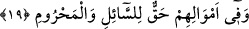

Tembelliği terket ki ganimetten faydalanasın
“Yolculuk azığı çeviklik ve atikliktir” diye bir mesel vardır.
19. Mallarında, muhtaç ve yoksullar için bir hak vardı.
“Mallarında bir hak vardı.” Yâni (zengin) mü’minlerin mallarından üzerine vâcib
saydıkları; Allah’a yakınlaşma ve insanlara merhamet sebebiyle (fakirlere) vermeye
devam ettikleri bol bir hisse vardı.
Âyetteki “hak” tâbiri ile Allah’ın zengin mü’minlere farz kıldığı “zekât”
kasdedilmediği için mü’minler diledikleri kimselere sadakalarını verebilirler. Çünkü
malında fakirler için belli bir hisse bulunan kişi niçin methedilsin ki? Zenginlerin içinde
zekâtını vermeyen, ama bu mânâ içine girebilecek pek çok insan vardır. Oysa bunlar
methe lâyık değildirler.
“(Mallarında) dilenci” sadaka ve hayır talep eden “ve yoksul için” iffetinden dolayı
insanlar tarafından zengin zannedildiklerinden dolayı sadakadan dâhi mahrum bulunan
muhtaç için “bir hak vardı.”
Kâmus’ta “mahrum”, “hayırdan men’ olunan ve kendisine âid hiçbir malı bulunmayan
kimse” târif edilir.
Müfredât’da ise “rızık husûsunda başkalarına verilen genişliğe karşın kendi hayrı için
rızkı daraltılandır” diye izah edilmektedir.
Bahru’l-ulûm’da bu hususta şöyle denilmektedir: Yüce Allah’ın bu âyette, yardıma
muhtaç diğer insanları saymaksızın “dilenci ve yoksulu” zikretmesinin nedeni;
Rasûlullah (s.a.)’in: “Şüphesiz ki zekat dışında da malda bir hak vardır”[13]
buyurduğu üzere, bundan kasdedilenin, farz olan zekatın dışındaki nâfile sadakayı
belirtmek içindir. Yâni zekatın dışında da malda vâcib olan bir hak vardır. Bu sadakanın
verilmesi ile ilgili hususlar da şu gibi hallerde ortaya çıkar: Ebeveynin fakir durumda
olması, fakirlik ve çekingenlik sâhibi bir akrabanın mevcud olması, rızık esbabı
kendisine kadar getirilmiş olduğu halde bundan uzaklaşıp mahrûm ve mustarip bir
durumda kalınması… gibi hallerde.
Bir hadîs-i şerifte şöyle buyrulmuştur: “Zenginlerin fakirler sebebiyle kıyâmet
gününde çekecekleri var. Zira o fakirler kıyâmette: «Ey Rabbimiz! Bunlar haklarımızı
ihlâl edip (nafakalarımızı) vermediler» diye onları şikâyet ederler. Bunun üzerine
Allah da onlara: «Andolsun ki ben sizi kendime yaklaştıracak, onları da
uzaklaştıracağım» buyurur.” Rasûlullah (s.a.) bu hadisin peşinden de (Zâriyât: 51/19)
âyetini okumuştur.[14]
Demek ki mutlaka infakda bulunmak gerekiyor. Ayrıca bu, en güzel ahlakî
meziyetlerden biridir.